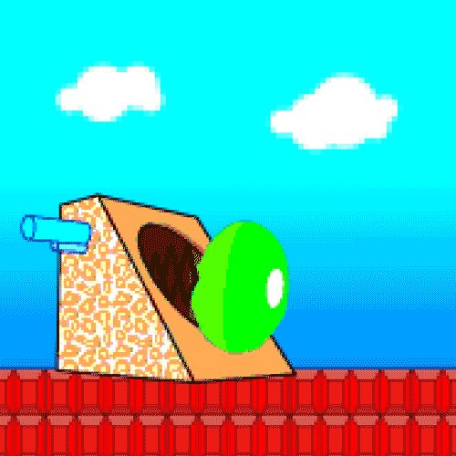

FIG is an ONLINE + OFFLINE exhibit celebrating the power of the GIF. It is a small part of the larger study on
the evolving internet expressions of our age – freshly incubated at the Eyemyth Festival 2019.

"The Loss of Creativity"
The loss of creativity is a painful process, akin to getting sucked into an
inescapable void. But, we have learnt that recognising and engaging with this void is
essential to discover new landscapes of creativity and personal satisfaction. When was
the last time you were trapped in a loss of creativity? Describe your emotions through a GIF.

Guidelines
A looping GIF 600 x 600 px
Not more than 4mb in size.
NO video/photo content allowed
Beyond that, feel free to draw, code, design, animate, etc.

Gifs, as we have come to understand them, are not determined by linguistic boundaries.
They are coded by community, shared experience and (lo and behold!) popular culture. Shared,
re-shared and referenced across various contexts they eventually become fused with everyday language.
This year at Eyemyth we want to use FIG to engage with all kinds of artists,
thinkers and tinkerers. But but, there are some rules to follow, so please
skim carefully!
Currently looping at